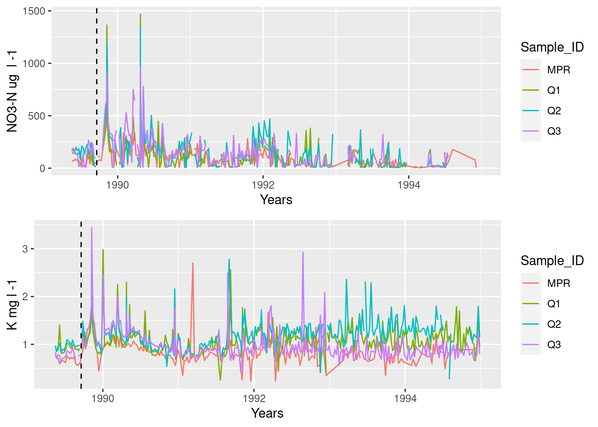
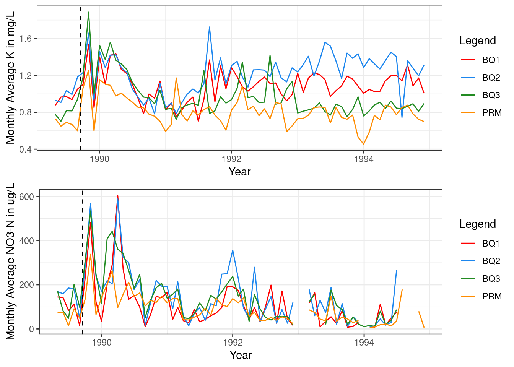
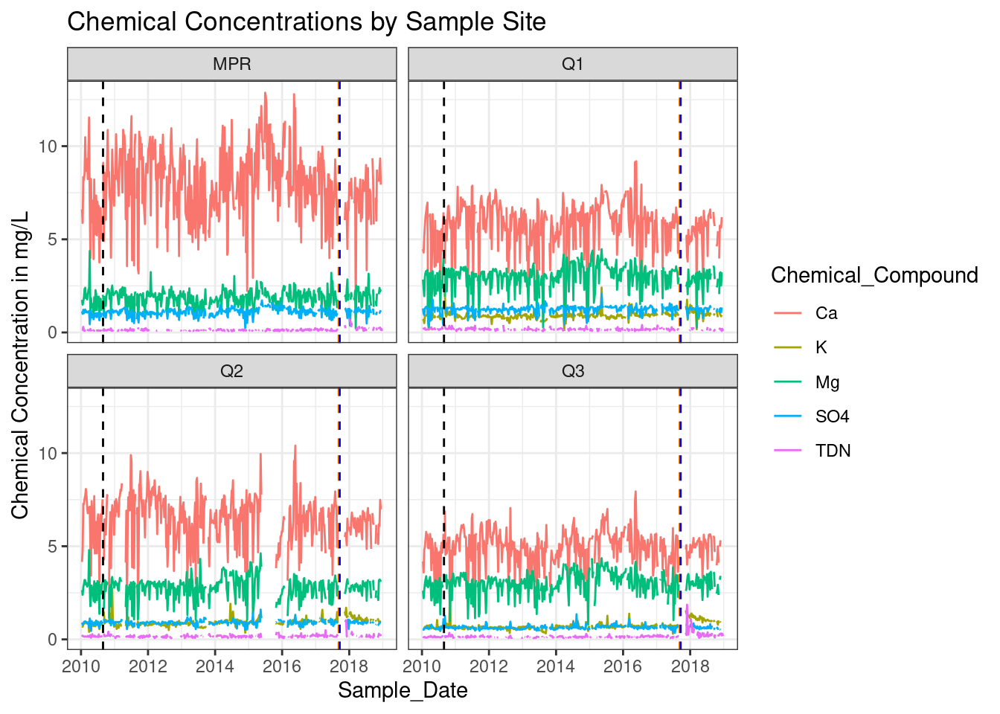

# Attach the necessary packages for the project
library(ggplot2)
library(here)
library(janitor)
library(tidyverse)
library(lubridate)
library(ggpubr)Group_Fourk Project
Group Project
Libraries:
Read in data sets (BQ1, BQ2, BQ3, PRM)
# Read in the Data sets
PRM <- read_csv(here("data", "RioMameyesPuenteRoto.csv"))
BQ1 <- read_csv(here("data", "QuebradaCuenca1-Bisley.csv"))
BQ2 <- read_csv(here("data", "QuebradaCuenca2-Bisley.csv"))
BQ3 <- read_csv(here("data", "QuebradaCuenca3-Bisley.csv"))Question 1
Graph the Data Based on Sample Date
BQ1_filter <-
BQ1 %>%
# Filter the Data to a specific time series, remove NA Values
filter(Sample_Date > "1989-05-09", na.rm = TRUE) %>%
filter(Sample_Date < "1995-01-03") %>%
# Group the data based on which site the data came from
group_by(Sample_ID) %>%
# Select only the necessary data columns from the raw data
select("Sample_ID", "Sample_Date", "NO3-N", "K")
BQ2_filter <-
BQ2 %>%
# Filter the Data to a specific time series, remove NA Values
filter(Sample_Date > "1989-05-09", na.rm = TRUE)%>%
filter(Sample_Date < "1995-01-03") %>%
# Group the data based on which site the data came from
group_by(Sample_ID) %>%
# Select only the necessary data columns from the raw data
select("Sample_ID", "Sample_Date", "NO3-N", "K")
BQ3_filter <-
BQ3 %>%
# Filter the Data to a specific time series, remove NA Values
filter(Sample_Date > "1989-05-09", na.rm = TRUE)%>%
filter(Sample_Date < "1995-01-03") %>%
# Group the data based on which site the data came from
group_by(Sample_ID) %>%
# Select only the necessary data columns from the raw data
select("Sample_ID", "Sample_Date", "NO3-N", "K")
PRM_filter <- PRM %>%
# Filter the Data to a specific time series
filter(Sample_Date < "1995-01-03") %>%
# Select only the necessary data columns from the raw data
select("Sample_ID", "Sample_Date", "NO3-N", "K") %>%
# Group the data based on which site the data came from
group_by(Sample_ID) %>%
# remove NA Values
drop_na()# Use the rbind function to combine all four data sets
combined_data <- rbind(BQ1_filter,BQ2_filter,PRM_filter,BQ3_filter)
#Making a plot
plot_k <- ggplot(data =combined_data, aes(x= Sample_Date , y = K))+
geom_line(aes(color = Sample_ID))+
xlab("Years")+
ylab("K mg l -1")+
# Add in a vertical line to indicate when the hurricane happened
geom_vline(xintercept = as.numeric(as.Date("1989-09-18")),linetype= "dashed")
plot_no3 <- ggplot(data =combined_data, aes(x= Sample_Date , y = `NO3-N`))+
geom_line(aes(color = Sample_ID))+
xlab("Years")+
ylab("NO3-N ug l -1")+
# Add in a vertical line to indicate when the hurricane happened
geom_vline(xintercept = as.numeric(as.Date("1989-09-18")),linetype= "dashed")
ggarrange(plot_no3, plot_k,
nrow=2,
ncol=1)
Recreate the data using a monthly average
# Create a function that will wrangle the data to find the monthly averages for each site, based of the user input "data"=name of the data
data_wrang_1 <- function(data)
# Define the dataset
data %>%
# Filter the data to a selected time series and remove NA Values
filter(Sample_Date > "1989-05-09", na.rm = TRUE) %>%
filter(Sample_Date < "1995-01-03") %>%
# Create a new column called "formatted_date" to extract just the month and year info
mutate(formatted_date = format(Sample_Date, format = "%y- %m")) %>%
# Select only the necessary compounds for the monthly average graph
select("formatted_date", "Sample_Date", "Sample_ID", "NO3-N", "K") %>%
# Rename the NO3-N column because ggplot thinks "-" is the minus operator
rename(Nitrate = 'NO3-N') %>%
# group by the month-year info extrracted from Sample_Date
group_by(formatted_date) %>%
# Create a summary table that provides the monthly averages for K and N based on the month-year grouping. Removnig NA values where necessary
summarize(monthly_avg_K = (mean(K, na.rm = TRUE)),
monthly_avg_NO3 = (mean(Nitrate, na.rm = TRUE)))
# Run each dataset through the data wrangling function
#Use lubridate ym function to change the class of formatted-date to a date class from a character class
BQ1_DW <- data_wrang_1(BQ1)
BQ1_DW$formatted_date <- ym(BQ1_DW$formatted_date)
BQ2_DW <- data_wrang_1(BQ2)
BQ2_DW$formatted_date <- ym(BQ2_DW$formatted_date)
BQ3_DW <- data_wrang_1(BQ3)
BQ3_DW$formatted_date <- ym(BQ3_DW$formatted_date)
PRM_DW <- data_wrang_1(PRM)
PRM_DW$formatted_date <- ym(PRM_DW$formatted_date)Plot the Monthly average data
# Create a matrix called "legend colors" to specify which legend colors you want to use
legend_colors <- c("color_1" = "red", "color_2"= "dodgerblue2", "color_3"= "forestgreen", "color_4"= "darkorange")
# Use ggplot to plot the monthly averages for nitrate over time
avg_N <- ggplot(data = NULL, aes(x = formatted_date, y = monthly_avg_NO3, group = 1))+
# Use geom_line to associate a color with each data set
geom_line(data = BQ1_DW, aes(color = "color_1"))+
geom_line(data = BQ2_DW, aes(color = "color_2"))+
geom_line(data = BQ3_DW, aes(color = "color_3"))+
geom_line(data = PRM_DW, aes(color = "color_4"))+
# Change the axis labels
ylab("Monthly Average NO3-N in ug/L")+
xlab("Year")+
# Add the Legend
labs(color = "Legend") +
scale_color_manual(values = legend_colors,
labels = c("color_1" = "BQ1",
"color_2" = "BQ2",
"color_3" = "BQ3",
"color_4" = "PRM"))+
# Change the theme
theme_bw()+
# Add in a vertical line to indicate when the hurricane happened
geom_vline(xintercept = as.numeric(as.Date("1989-09-18")),linetype= "dashed")
# Use ggplot to plot the montly averages over time
avg_K <- ggplot(data = NULL, aes(x = formatted_date, y = monthly_avg_K, group = 1))+
# Use geom_line to associate a color with each data set
geom_line(data = BQ1_DW, aes(color = "color_1"))+
geom_line(data = BQ2_DW, aes(color = "color_2"))+
geom_line(data = BQ3_DW, aes(color = "color_3"))+
geom_line(data = PRM_DW, aes(color = "color_4"))+
# Change the axis labels
ylab("Monthly Average K in mg/L")+
xlab("Year")+
# Add the Legend
labs(color = "Legend") +
scale_color_manual(values = legend_colors,
labels = c("color_1" = "BQ1",
"color_2" = "BQ2",
"color_3" = "BQ3",
"color_4" = "PRM"))+
# Change the theme
theme_bw()+
# Add in a vertical line to indicate when the hurricane happened
geom_vline(xintercept = as.numeric(as.Date("1989-09-18")),linetype= "dashed")
# Use ggarrange to put the two grpahs together
ggarrange(avg_K, avg_N,
nrow=2,
ncol =1)
Question 2
BQ1_filter2 <-
# Define the Data Set
BQ1 %>%
# Group by the site for future merge/facet wrap
group_by(Sample_ID) %>%
# select the columns we want to analyze
select("Sample_ID", "Sample_Date", "SO4-S", "Mg", "K","Ca", "TDN") %>%
# Rename the sulfate column to remove the dash from the variable name
rename(SO4 = 'SO4-S') %>%
# filter to only look at data after 2010
filter(Sample_Date > "2010-01-05", na.rm = TRUE)
BQ2_filter2 <-
# Define the Data Set
BQ2 %>%
# Group by the site for future merge/facet wrap
group_by(Sample_ID) %>%
# select the columns we want to analyze
select("Sample_ID", "Sample_Date", "SO4-S", "Mg", "K","Ca", "TDN")%>%
# Rename the sulfate column to remove the dash from the variable name
rename(SO4 = 'SO4-S') %>%
# filter to only look at data after 2010
filter(Sample_Date > "2010-01-05", na.rm = TRUE)
BQ3_filter2 <-
# Define the Data Set
BQ3 %>%
# Group by the site for future merge/facet wrap
group_by(Sample_ID) %>%
# select the columns we want to analyze
select("Sample_ID", "Sample_Date", "SO4-S", "Mg", "K","Ca", "TDN")%>%
# Rename the sulfate column to remove the dash from the variable name
rename(SO4 = 'SO4-S') %>%
# filter to only look at data after 2010
filter(Sample_Date > "2010-01-05", na.rm = TRUE)
PRM_filter2 <-
# Define the Data Set
PRM %>%
# Group by the site for future merge/facet wrap
group_by(Sample_ID) %>%
# select the columns we want to analyze
select("Sample_ID", "Sample_Date", "SO4-S", "Mg", "Ca", "TDN")%>%
# Rename the sulfate column to remove the dash from the variable name
rename(SO4 = 'SO4-S') %>%
# filter to only look at data after 2010
filter(Sample_Date > "2010-01-05", na.rm = TRUE)
combined_data_2 <- rbind(BQ1_filter2,BQ2_filter2,PRM_filter2,BQ3_filter2)
conc_data <- pivot_longer(data = combined_data_2, cols = SO4:TDN, names_to = "Chemical_Compound", values_to = "Concentration")Plot the data
# Plot the Data
ggplot(conc_data, aes(x = Sample_Date, y = Concentration))+
# plot each chemical compound
geom_line(aes(color = Chemical_Compound))+
# Create different plots for each site
facet_wrap(facets = "Sample_ID")+
# Set the theme
theme_bw()+
# Hurricane Urma = Catagory 5
geom_vline(xintercept = as.numeric(as.Date("2017-09-07")),
linetype= "dashed",
color = "darkorange")+
#Hurricane Maria = Catagory 5
geom_vline(xintercept = as.numeric(as.Date("2017-09-19")),
linetype= "dashed",
color = "blue")+
# Hurricane Earl = Catagpry 4
geom_vline(xintercept = as.numeric(as.Date("2010-08-29")),linetype= "dashed")+
# Fix axis labels and title
labs(title = "Chemical Concentrations by Sample Site")+
ylab("Chemical Concentration in mg/L")